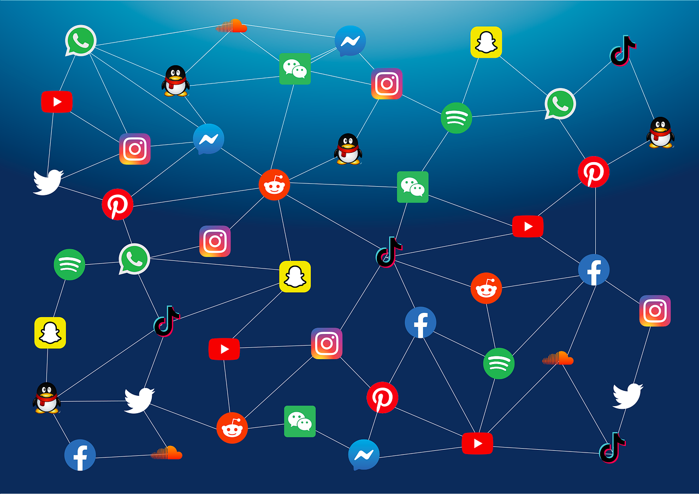

A social network with different content in China
TikTok is a social network like facebook, instagram, snapchat. But with one condition, TikTok is different in China.
It is the only social network in the world that does not have the same content everywhere in the world. Chinese content is unavailable everywhere in Europe, and Chinese people can only see content from China. This is because the creator of TikTok is Chinese, and is heavily censored in the country.
In China, the platform displays conspiratorial content and mass disinformation. Thus, on the Chinese TikTok, we will find military videos and graduation ceremonies. In the TikTok of the rest of the world, we find more hyper-sexualized teenage bodies, or many videos of jokes, creative arts, and others.
It is a difference that helps China to control its social network more, and to broadcast what they see fit, to try to change the opinion of citizens. Moreover, it creates a data ownership problem. All data posted on TikTok belongs to China and can be used to spy on countries in Europe and the rest of the world against their will.
https://www.bfmtv.com/tech/tiktok/censure-tradition-interruptions-la-version-chinoise-de-tik-tok-est-bien-differente-de-la-notre_AV-202303030022.htmlhttps://www.ladn.eu/media-mutants/tiktok-transforme-enfants-idiots/